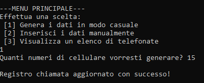
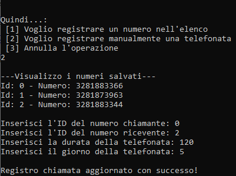

Testo:
Si vuole simulare l’archivio di chiamate di un gestore telefonico. L’archivio risulta mensile (31 giorni). Ogni giorno vengono effettuate al massimo 10 chiamate e il costo al minuto di una chiamata e' di 10 centesimi. Ogni chiamata e' identificata dal numero chiamante, il numero ricevente e la durata della chiamata. Provvedere all’implementazione dell’algoritmo per la simulazione dell’archivio. Permettere, inoltre, all’utente di:
- Dato un numero telefonico visualizzare tutte le chiamate con le relative informazioni in un singolo giorno
- Dato un numero telefonico vedere il costo totale delle chiamate.
- Data una data visualizzare le informazioni relative alla chiamata piu' costosa (usare un algoritmo ricorsivo con approccio incrementale).
Osserviamo:
Questo programma simula l'archivio mensile di un gestore telefonico.Come dice la traccia: ogni giorno devono essere effettuate al massimo 10 chiamate e il costo al minuto di una chiamata e' di 10 centesimi.
Ogni chiamata e' identificata dal numero chiamante, il numero ricevente e la durata della chiamata. L’archivio può anche essere inizializzato con informazioni casuali.
Nel programma sono inoltre implementate le tre funzioni richieste dalla traccia.
Algoritmo:
#define _CRT_SECURE_NO_WARNINGS //utilizzo questa dicitura per evitare di far generare dei warnings all'IDE Visual Studio
#include <stdio.h>
#include <stdlib.h>
#include <time.h>
#include <string.h>
typedef enum { false, true } bool; //Definiamo il tipo booleano
/* Questa struct definisce il tipo 'chiamata': gli id sono altro che gli indici dell'array di stringhe 'numeri'
La durata viene intesa in secondi.*/
typedef struct chiamata {
int id_chiamante;
int id_ricevente;
int durata;
} Chiamata;
/* Come specificato nella traccia, l'archivio deve essere grande di un mese (31 giorni) e ciascun giorno può contenere al massimo 10 chiamate.
Quindi, creiamo un nuovo tipo che lo rappresenti.*/
typedef struct archivio {
Chiamata mensile[10][31];
} Archivio;
/* Area dichiarazioni */
char* numeri[50] = { "3281883366", "3281873963" };
int quantita = 2;
Archivio chiamate;
bool auto_generato = false;
void scegli();
void auto_genera();
void inserisci_dati(int, int, int, int);
void inserisci_chiamata();
void visualizza_numeri();
void visualizza_chiamate();
void visualizza(int, int);
double calcola_costo(int);
int chiamata_cara(Chiamata*, int, int);
int max_I(int, int, int);
/* Qui non accade nulla di speciale. Imposta dei dati, ma la cosa piu' importante e' che viene richiamata la procedura 'scegli', ovvero il menu' principale */
void main()
{
printf("Progetto d'Esame di Laboratorio\nTitolo Progetto: Chiamate Telefoniche\nStudente: Tartaglia Luca\n\n");
//inserisce i miei dati
chiamate.mensile[0][0].id_chiamante = 0; chiamate.mensile[0][0].id_ricevente = 1; chiamate.mensile[0][0].durata = 120;
scegli();
}
/* Menu' principale del programma.
- Inseriamo 1 se vogliamo far generare i dati in maniera casuale al programma
- Inseriamo 2 se vogliamo inserire i dati manualmente
- Inseriamo 3 se invece vogliamo visualizzare i dati (qui e' dove vengono sviluppati i punti dell'esercizio)
*/
void scegli()
{
printf("\n---MENU PRINCIPALE---\nEffettua una scelta:\n");
printf(" [1] Genera i dati in modo casuale\n [2] Inserisci i dati manualmente\n [3] Visualizza un elenco di telefonate\n");
int scelta = 0;
scanf("%d", &scelta);
switch (scelta) {
case 1:
/* Se i dati sono stati già generati, allora evita di rifarlo. */
if (auto_generato == false) auto_genera();
else {
printf("\nI dati sono gia' stati generati.\n");
scegli();
}
break;
case 2:
inserisci_chiamata();
break;
case 3:
visualizza_chiamate();
break;
default:
printf("\nLa scelta effettuata non e' valida!\n");
scegli();
break;
}
}
/* Questa procedura genera in maniera automatica i dati, inseriti poi attraverso la procedura 'inserisci dati' in 'chiamate' */
void auto_genera()
{
int i, j, num = 10, c;
printf("Quanti numeri di cellulare vorresti generare? ");
scanf("%d", &num);
if (num > 50 || num < 2) num = 50; //regola automaticamente se sono stati inseriti piu' di 50 numeri
srand(time(NULL));
//genera dei prefissi italiani (3xx xxx xxxx)
for (i = 0; i < num; i++)
{
c = 3000000000 + rand() % 999999999;
numeri[i] = malloc(10);
sprintf(numeri[i], "%lu", c); //utilizziamo la function sprintf per convertire l'intero in stringa (e copiarlo nell'array di stringhe 'numeri')
}
quantita = num;
for (i = 0; i < 31; i++)
{
for (j = 0; j < 10; j++)
{
/* Genera due id (il primo compreso riguarda l'id-chiamante, il secondo invece l'id-ricevente),
il totale in secondi della durata della telefonata che può variare da 0 a 18.000; poi da in input la i-esima giornata*/
inserisci_dati(rand() % num,rand() % num, rand() % 18000, i + 1);
}
}
auto_generato = true;
scegli(); //torna al menu' principale
}
/* Inserisce i dati nel database (se vogliamo definirlo meglio, in un Array 2D del tipo 'Chiamata')
'chiamante', 'ricevente', 'durata', 'giorno' sono tutti valori che vengono dati in input. */
void inserisci_dati(int chiamante, int ricevente, int durata, int giorno)
{
//Effettua prima un piccolo controllo, per verificare se i dati inseriti sono corretti
if (giorno > 31 || chiamante >= quantita || ricevente >= quantita || durata <= 0)
{
printf("\nAlcuni dei dati inseriti sono sbagliati. Per favore riprova!\n");
return;
}
//Verifica qual e' l'ultima chiamata registrata del giorno selezionato (controlla se la durata della telefonata e' pari a zero secondi)
int i;
for (i = 0; i < 10; i++)
if (chiamate.mensile[i][giorno - 1].durata == 0) break;
//Se 'i' eccede il massimo di 10 telefonate giornaliere, allora esce dalla procedura
if (i == 10) { printf("\nLimite giornaliero raggiunto! [Giorno %d] Impossibile aggiungere questa chiamata!\n", giorno); return; }
chiamate.mensile[i][giorno - 1].id_chiamante = chiamante;
chiamate.mensile[i][giorno - 1].id_ricevente = ricevente;
chiamate.mensile[i][giorno - 1].durata = durata;
printf("\nRegistro chiamata aggiornato con successo!\n");
}
/* Questa procedura chiede:
- se si vuole registrare manualmente un contatto telefonico
- se se vuole simulare una telefonata (ovvero, registrarla nel database)
- se si vuole tornare al menu' principale */
void inserisci_chiamata()
{
printf("\nQuindi...:\n");
printf(" [1] Voglio registrare un numero nell'elenco\n [2] Voglio registrare manualmente una telefonata\n [3] Annulla l'operazione\n");
int scelta = 0, i = 0, j = 0, d = 0, g = 0;
scanf("%d", &scelta);
switch (scelta) {
case 1:
/* Registriamo manualmente un numero nell'elenco. Una volta fatto, aumenta di 1 il valore di 'quantita'*/
printf("\nImmetti il numero: ");
char verifica[10] = ""; numeri[quantita] = malloc(11); scanf("%10s", numeri[quantita]); //utilizziamo malloc per allocare, siccome numeri[n] non e' stato inizializzato
printf("\n\nFATTO! Ho registrato il numero [%s] con ID [%i]\n", numeri[quantita], quantita);
quantita++;
visualizza_numeri();
inserisci_chiamata();
break;
case 2:
/* Registra manualmente nel database i dati di una telefonata... effettuiamo delle simulazioni (mi e' stato utile per il debug) */
visualizza_numeri();
printf("Inserisci l'ID del numero chiamante: "); scanf("%d", &i);
printf("Inserisci l'ID del numero ricevente: "); scanf("%d", &j);
printf("Inserisci la durata della telefonata: "); scanf("%d", &d);
printf("Inserisci il giorno della telefonata: "); scanf("%d", &g);
inserisci_dati(i, j, d, g);
inserisci_chiamata();
break;
case 3: scegli(); break; //torna nel menu' principale
}
}
/* Visualizza tutti i numeri salvati (in parole povere, visualizza l'array di stringhe 'numeri')
Molto utile quando bisogna selezionare l'ID del contatto interessato. */
void visualizza_numeri()
{
printf("\n---Visualizzo i numeri salvati---\n");
int i;
for (i = 0; i < quantita; i++)
{
printf("Id: %d - Numero: %s\n", i, numeri[i]);
}
printf("\n");
}
/* In questa procedura viene chiesto:
- se si vogliono visualizzare tutte le chiamate registrate (nel corso di tutto il mese)
- se si vogliono visualizzare le informazioni specifiche di un contatto (categorizza il tutto per singoli giorni e visualizza il costo totale, rispondendo al primo e al secondo quesito)
- se si vuole visualizzare la chiamata piu' costosa del giorno specificato (rispondendo al terzo quesito)*/
void visualizza_chiamate()
{
printf("\nScegli:\n");
printf(" [1] Visualizza tutte le chiamate\n [2] Visualizza le informazioni specifiche di un contatto\n [3] Visualizza la chiamata piu' costosa del giorno\n");
int scelta = 0, i, j, sel = 0;
double totale = 0;
bool cambia = false;
scanf("%d", &scelta);
switch (scelta) {
case 1:
/* Visualizza tutte le chiamate dell'archivio! */
printf("\n---Visualizzo tutte le chiamate---");
for (i = 0; i < 31; i++)
{
for (j = 0; j < 10; j++)
{
if (chiamate.mensile[j][i].durata > 0)
{
//controlla se la durata della chiamata e' maggiore di 0. In tal caso, la mostra. Inoltre, visualizza la data (potrebbe risultare utile)
visualizza(j, i);
printf("- Data: %d", i + 1);
}
}
}
printf("\n---Fine visualizzazione---\n");
break;
case 2:
/* In questo caso, rispondiamo alla prima e alla seconda domanda del quesito: */
visualizza_numeri();
printf("Inserisci l'ID del contatto interessato: "); scanf("%d", &sel);
for (i = 0; i < 31; i++)
{
for (j = 0; j < 10; j++)
{
if (chiamate.mensile[j][i].id_chiamante == sel && chiamate.mensile[j][i].durata > 0)
{
//Se e' la prima volta che visualizza questa i-esima giornata, allora mostra un messaggio esplicativo
if (cambia == false)
{
printf("\n- Visualizzo le informazioni relative al giorno %d -\n", i + 1);
cambia = true;
}
visualizza(j, i);
printf("- Costo: %3.2f\n", calcola_costo(chiamate.mensile[j][i].durata)); //stampa soltanto le prime tre cifre intere e le prime due decimali, dopo la virgola
totale += calcola_costo(chiamate.mensile[j][i].durata); //aggiunge al costo totale
}
}
cambia = false;
}
printf("\n\n$ In totale, questo contatto ha speso: %3.2f euro\n", totale); //visualizza il costo totale
break;
case 3:
/* Risponde alla terza domanda del quesito, data una data visualizza le informazioni relative alla chiamata piu' costosa */
printf("Inserisci il giorno del mese: "); scanf("%d", &sel);
//Controlla che tutto sia a posto...
if (sel > 0 && sel < 32)
{
printf("La chiamata piu' costosa del giorno %d e': ", sel);
visualizza(chiamata_cara(chiamate.mensile, 10, sel - 1), sel - 1); //il valore dell'indice del valore massimo viene passato attraverso la funzione ricorsiva 'chiamata_cara'
}
break;
}
scegli(); //torna al menu' principale
}
/* Visualizza le informazioni della chiamata. Questa procedura viene utilizzata da 'visualizza_chiamate' */
void visualizza(int x, int y)
{
printf("\n * Chiamante: %s - Ricevente: %s - Durata: %d ", numeri[chiamate.mensile[x][y].id_chiamante], numeri[chiamate.mensile[x][y].id_ricevente], chiamate.mensile[x][y].durata);
}
/* Piccola e semplice function per calcolare il costo delle telefonate */
double calcola_costo(int secondi)
{
return (secondi / 60) * 0.10; //Come specificato dalla traccia, ogni minuto costa 10 centesimi
}
/* Data una data visualizzare le informazioni relative alla chiamata piu' costosa
(usare un algoritmo ricorsivo con approccio incrementale).
*a e' il valore in input passato da chiamata.mensile
n e' il fattoriale, in input 10 (poiché, come specifica la traccia bisogna fare al massimo 10 chiamate per giorno)
m e' il numero in input della colonna dell'array2D (ovvero il mese) */
int chiamata_cara(Chiamata *a, int n, int m)
{
if (n == 1)
//soluzione del caso base
return 0;
else
//autoattivazione
return max_I(n - 1, chiamata_cara(a, n - 1, m), m);
}
/* Questa function e' il continuo della function chiamata_cara
x e y sono i valori delle righe dell'array 'chiamate' che vanno confrontati (per vedere qual e' il maggiore fra i due)
m, come detto prima, e' il numero della colonna dell'array2D */
int max_I(int x, int y, int m)
{
if (calcola_costo(chiamate.mensile[x][m].durata) >= calcola_costo(chiamate.mensile[y][m].durata))
return x;
else
return y;
}
I test:
Primo Test
Utilizziamo la prima opzione proposta per generare 15 numeri di cellulare casuali.
Questa function non ha solo generato i numeri, ma ha anche "randomizzato" (cioe', generato a caso) l'intero database mensile.
Per verificare cio', sfruttiamo l'apposita opzione.

Adesso, selezioniamo un numero telefonico per richiedere l'elenco delle sue telefonate effettuate.
Eccole qua!
Vogliamo adesso visualizzare la chiamata piu' costosa del 31esimo giorno del mese
Perfetto. Se si vuole, e' possibile verificare cio' tramite l'opzione che ho mostrato prima: 'Visualizza tutte le chiamate'
Come vediamo, nel giorno 31 la telefonata del numero 3000004239 e' quella con maggiore durata, quindi di maggior costo
Secondo Test
Di nuovo, generiamo in maniera casuale 50 numeri di cellulare (per farlo, e' necessario riavviare il programma).Selezioniamo il contatto con ID 25 e verifichiamo le sue telefonate.
Verifichiamo adesso la chiamata di maggior costo del giorno 17.
Controlliamo se e' vero...
Si'! Il numero 3000021182 ha effettuato la chiamata piu' lunga del giorno.
Terzo Test
Adesso, generiamo un nuovo database inserendo manualmente tre numeri di cellulare.Adesso, simuliamo delle telefonate tramite l'apposita opzione.

Verifichiamo.